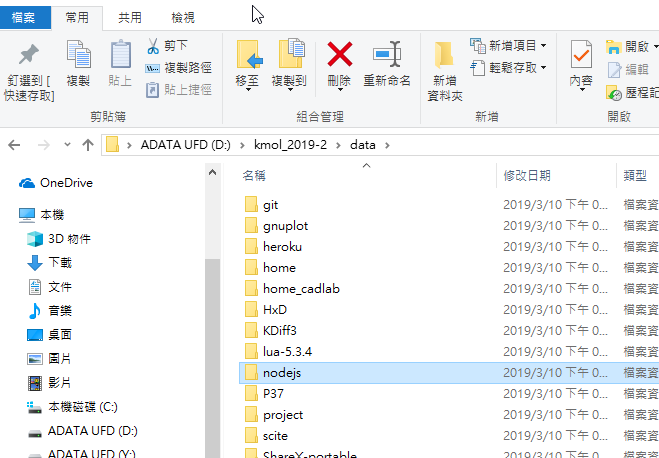

可攜系統 << Previous
可攜系統 << Previous
Kungit 製作
Step1.
Open http://mde.tw/wcm2019/content/實習項目二.html=>Download nodejs_with_ungit.7z Put that into DATA document

Step2.
Use SciTE 編輯器 edit start_cadlab.bat and put
set path8=%Disk%:\nodejs;%Disk%:\nodejs\appdata\roaming\npm;
set USERPROFILE=%Disk%:\home
%path3%; into start_cadlab.bat
Step3.
Use SciTE 編輯器 add
ungit --launchBrowser=0 --launchCommand "C:\PROGRA~2\Google\Chrome\Application\chrome.exe %%U" save as kungit.bat

then we put that into Y:\
Step4.
Open your Koml_2019 star.bat which place in Repositories
Just type kungit to call this
Done .
可攜系統 << Previous